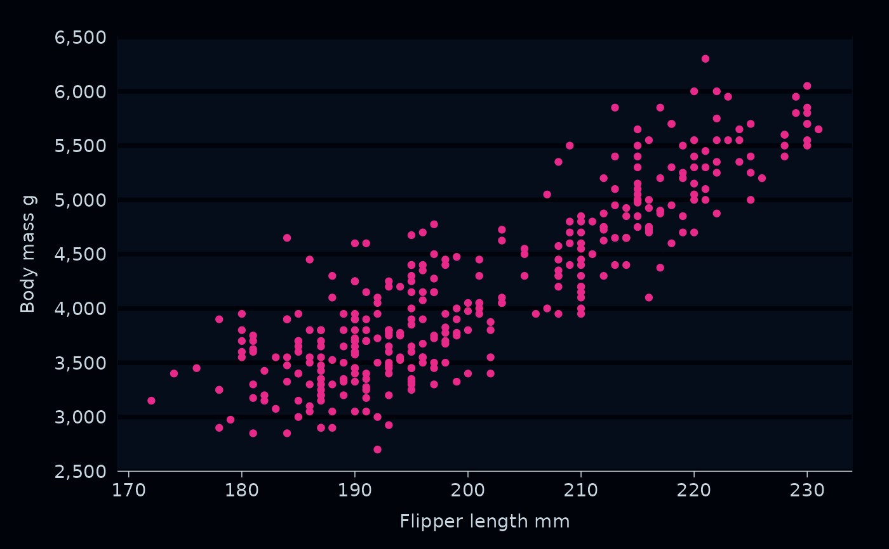

Set the style by setting:
the theme, and how/what side-effects are to be applied
the geom defaults, including the colour (and fill) of geoms
the geom colour (and fill) palettes (i.e. discrete, continuous and ordinal)
the function to apply to a unspecified/unlabelled
x_label,y_label,col_labeletc.
ggplot2::update_geom_defaults() can be used to further fine-tune geom defaults.
Usage
set_blanket(
...,
theme = light_mode_r(),
theme_orientation = NULL,
theme_axis_line_rm = TRUE,
theme_axis_ticks_rm = TRUE,
theme_panel_grid_rm = TRUE,
col_palette_d = jumble,
col_palette_c = viridisLite::mako(n = 9, direction = -1),
col_palette_o = scales::pal_viridis(option = "G", direction = -1),
col_palette_na_d = "#CDC5BFFF",
col_palette_na_c = "#988F88FF",
col_palette_na_o = "#988F88FF",
colour = "#357BA2FF",
fill = colour,
linewidth = 0.66,
label_case = snakecase::to_sentence_case
)Arguments
- ...
Provided to require argument naming, support trailing commas etc.
- theme
A ggplot2 theme (e.g.
light_mode_t()ordark_mode_r()).- theme_orientation
The orientation of plot, which affects the theme components that can be removed by the
gg_*function. Either"x"or"y". Defaults toNULL, which lets thegg_*function guess it based on the data.- theme_axis_line_rm
TRUEorFALSEof whether thegg_*function should remove the relevant axis line per thetheme_orientationof the plot.- theme_axis_ticks_rm
TRUEorFALSEof whether thegg_*function should remove the relevant axis ticks per thetheme_orientationof the plot.- theme_panel_grid_rm
TRUEorFALSEof whether thegg_*function should remove the relevant panel grid per thetheme_orientationof the plot.- col_palette_d
For a discrete scale, a character vector of hex codes.
- col_palette_c
For a continuous scale, a character vector of hex codes.
- col_palette_o
For an ordinal scale, a
scales::pal_*()function.- col_palette_na_d
For a discrete scale, a hex code.
- col_palette_na_c
For a continuous scale, a hex code.
- col_palette_na_o
For an ordinal scale, a hex code.
- colour
A default hex code for the colour of geoms (i.e. geoms other than "text", "label", "hline", and "vline"). Note, the "fill" inherits from this argument.
- fill
A default hex code for the fill of relevant geoms (i.e. geoms other than "label"). Inherits from colour.
- linewidth
A numeric linewidth (i.e. for geoms that are polygons, and do not potentially have necessary adjacent lines - these get a linewidth of 0). Defaults to 0.66.
- label_case
A function to apply to a unspecified/unlabelled
x_label,y_label,col_labeletc. Defaults tosnakecase::to_sentence_case.
Examples
library(ggplot2)
library(ggblanket)
library(palmerpenguins)
set_blanket(
theme = dark_mode_r(),
colour = "#E7298AFF",
col_palette_d = c("#1B9E77FF", "#D95F02FF", "#7570b3FF", "#E7298AFF",
"#66A61EFF", "#E6AB02FF", "#A6761DFF", "#666666FF"),
)
#> Warning: Duplicated aesthetics after name standardisation: fill
#> Warning: Duplicated aesthetics after name standardisation: fill
penguins |>
gg_point(
x = flipper_length_mm,
y = body_mass_g,
)
#> Warning: Removed 2 rows containing missing values or values outside the scale range
#> (`geom_point()`).

penguins |>
gg_histogram(
x = flipper_length_mm,
col = species,
)
#> Scale for colour is already present.
#> Adding another scale for colour, which will replace the existing scale.
#> `stat_bin()` using `bins = 30`. Pick better value with `binwidth`.
#> Warning: Removed 2 rows containing non-finite outside the scale range (`stat_bin()`).